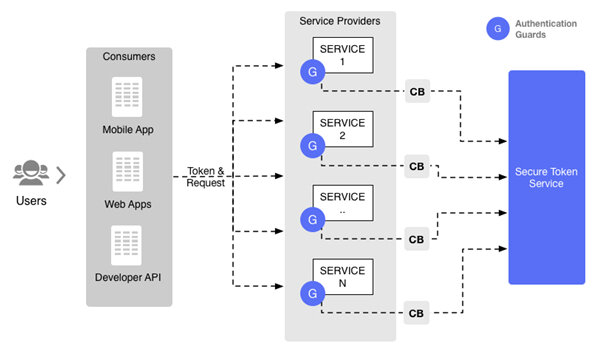
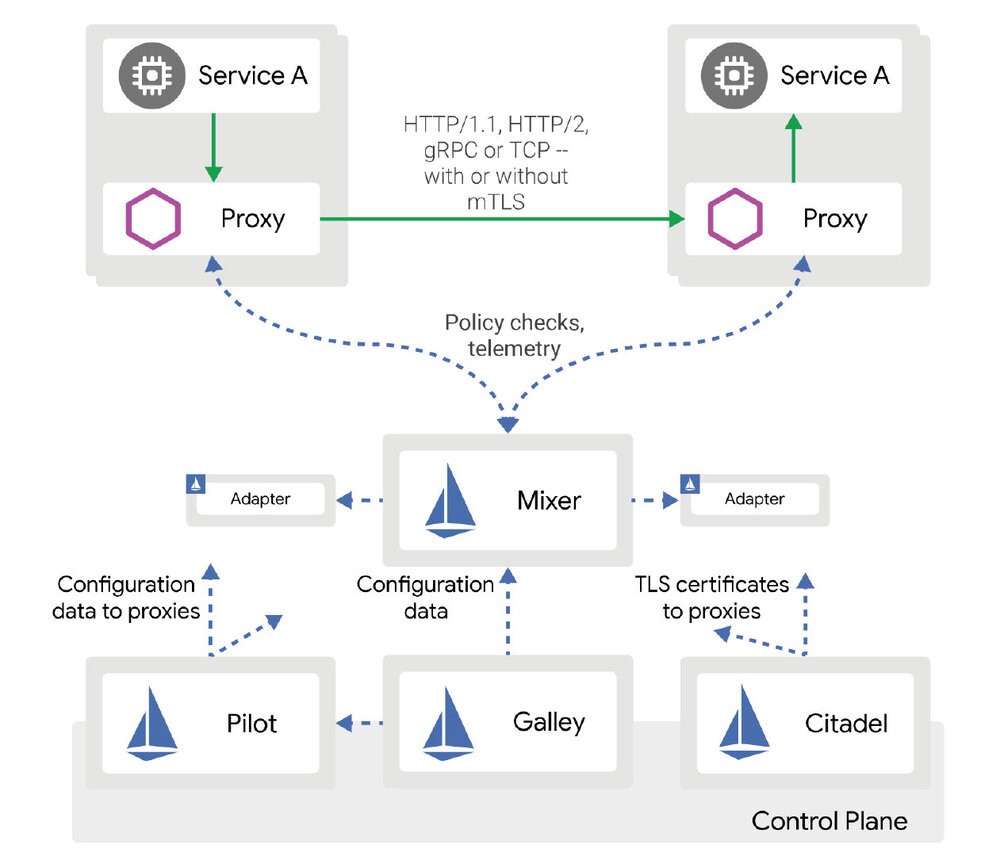

<!DOCTYPE html>

<html lang="zh-cn"><head>
  <meta charset="utf-8">
  
  <title>Istio——企业级微服务解决方案 | 云原生社区</title>
  

  <!-- mobile responsive meta -->
  <meta name="viewport" content="width=device-width, initial-scale=1, maximum-scale=1">
  <meta name="description" content="本文介绍了什么是Istio，并详细分析了Istio的优势，最后分享了关于Istio的一些落地经验。">
  
  <meta name="author" content=" 云原生社区">
  <meta name="generator" content="Hugo 0.65.3" />

  <!-- plugins -->
  
  <link rel="stylesheet" href="/plugins/bootstrap/bootstrap.min.css">
  
  <link rel="stylesheet" href="/plugins/slick/slick.css">
  
  <link rel="stylesheet" href="/plugins/fontawesome/font-awesome.min.css">
  
  <link rel="stylesheet" href="/plugins/animate/animate.css">
  
  <link rel="stylesheet" href="/plugins/venobox/venobox.css">
  

  <!-- Main Stylesheet -->
  
  <link rel="stylesheet" href="/scss/style.min.css" media="screen">

  <!--Favicon-->
  <link rel="shortcut icon" href="/images/favicon.png " type="image/x-icon">
  <link rel="icon" href="/images/favicon.png " type="image/x-icon">
  <meta property="og:image" content="https://cloudnative.to/images/favicon.png">
  <!--Algolia-->
  <link rel="stylesheet" href="https://cdn.jsdelivr.net/npm/docsearch.js@2.6.3/dist/cdn/docsearch.min.css">
  <!--Twitter card-->
  <meta name="twitter:card" content="summary_large_image" />
  <meta name="twitter:site" content="Cloud Native Community|云原生社区" />
  <meta name="twitter:creator" content="@CloudNativeCN" />
  <meta property="og:url" content="https://cloudnative.to/blog/istio-kubernetes-service-mesh/" />
  <meta property="og:title" content="Istio——企业级微服务解决方案" />
  <meta property="og:description" content="本文介绍了什么是Istio，并详细分析了Istio的优势，最后分享了关于Istio的一些落地经验。" />
  <meta property="og:image" content="https://cloudnative.to/images/blog/006tKfTcly1g0crj27wpij31400u0hdu.jpg" />
</head>
<body>
<!-- header -->


<div style='margin:0 auto;width:0px;height:0px;overflow:hidden;'>
     
</div>
<header>
  

  <!-- navigation -->
  <div class="navigation bg-white position-relative">
    <div class="container">
      <nav class="navbar navbar-expand-lg navbar-light bg-white">
        <a class="navbar-brand" href="/"></a>
        <button class="navbar-toggler border-0" type="button" data-toggle="collapse" data-target="#navigation"
          aria-controls="navigation" aria-expanded="false" aria-label="Toggle navigation">
          <span class="navbar-toggler-icon"></span>
        </button>

        <div class="collapse navbar-collapse text-center" id="navigation">
          <ul class="navbar-nav ml-auto">
            <li class="nav-item">
              <a class="nav-link" href="/"></a>
            </li>
            
            
            <li class="nav-item dropdown">
              <a class="nav-link dropdown-toggle" href="#" role="button" data-toggle="dropdown" aria-haspopup="true"
                aria-expanded="false">
                社区
              </a>
              <div class="dropdown-menu" >
                
                <a class="dropdown-item" href="/team">管理委员会</a>
                
                <a class="dropdown-item" href="https://i.cloudnative.to/academy/">云原生学院</a>
                
                <a class="dropdown-item" href="/city">城市站</a>
                
                <a class="dropdown-item" href="https://i.cloudnative.to/community/">社区资料</a>
                
              </div>
            </li>
            
            
            
            <li class="nav-item dropdown">
              <a class="nav-link dropdown-toggle" href="#" role="button" data-toggle="dropdown" aria-haspopup="true"
                aria-expanded="false">
                兴趣小组
              </a>
              <div class="dropdown-menu" >
                
                <a class="dropdown-item" href="https://i.cloudnative.to/kubernetes/">Kubernetes SIG</a>
                
                <a class="dropdown-item" href="https://i.cloudnative.to/istio/">Istio SIG</a>
                
                <a class="dropdown-item" href="https://i.cloudnative.to/envoy/">Envoy SIG</a>
                
                <a class="dropdown-item" href="https://i.cloudnative.to/dapr/">Dapr SIG</a>
                
                <a class="dropdown-item" href="https://i.cloudnative.to/oam/">OAM SIG</a>
                
                <a class="dropdown-item" href="https://i.cloudnative.to/stability/">稳定性 SIG</a>
                
                <a class="dropdown-item" href="https://i.cloudnative.to/observability/">可观察性 SIG</a>
                
                <a class="dropdown-item" href="https://i.cloudnative.to/edge/">边缘计算 SIG</a>
                
                <a class="dropdown-item" href="https://i.cloudnative.to/machine-learning/">机器学习 SIG</a>
                
              </div>
            </li>
            
            
            
            <li class="nav-item dropdown">
              <a class="nav-link dropdown-toggle" href="#" role="button" data-toggle="dropdown" aria-haspopup="true"
                aria-expanded="false">
                博客
              </a>
              <div class="dropdown-menu" >
                
                <a class="dropdown-item" href="/categories/kubernetes">Kubernetes</a>
                
                <a class="dropdown-item" href="/categories/service-mesh">Service Mesh</a>
                
                <a class="dropdown-item" href="/categories/envoy">Envoy</a>
                
                <a class="dropdown-item" href="/categories/oam">OAM</a>
                
                <a class="dropdown-item" href="/categories/%E5%BC%80%E6%BA%90%E7%A4%BE%E5%8C%BA">开源社区</a>
                
                <a class="dropdown-item" href="/categories/cloud-native">云原生</a>
                
                <a class="dropdown-item" href="/blog">所有</a>
                
              </div>
            </li>
            
            
            
            <li class="nav-item dropdown">
              <a class="nav-link dropdown-toggle" href="#" role="button" data-toggle="dropdown" aria-haspopup="true"
                aria-expanded="false">
                资料
              </a>
              <div class="dropdown-menu" >
                
                <a class="dropdown-item" href="http://landscape.opensourcecloud.cn/">云原生生态图景</a>
                
                <a class="dropdown-item" href="https://github.com/cloudnativeto/academy">云原生学院分享归档</a>
                
                <a class="dropdown-item" href="/kubebuilder">Kubebuilder 中文文档</a>
                
                <a class="dropdown-item" href="/envoy">Envoy 中文文档</a>
                
              </div>
            </li>
            
            
            
            <li class="nav-item dropdown">
              <a class="nav-link dropdown-toggle" href="#" role="button" data-toggle="dropdown" aria-haspopup="true"
                aria-expanded="false">
                关于
              </a>
              <div class="dropdown-menu" >
                
                <a class="dropdown-item" href="/about">介绍</a>
                
                <a class="dropdown-item" href="/contact">联系</a>
                
              </div>
            </li>
            
            
            
            <li class="nav-item">
              <a class="nav-link" href="/contribute">投稿</a>
            </li>
            
            
            
            <li class="nav-item">
              <a class="nav-link" href="/job">招聘</a>
            </li>
            
            
          </ul>

          
          

          
          <!-- search -->
          <div class="search px-4">
            <button id="searchOpen" class="search-btn"><i class="fa fa-search text-dark"></i></button>
            <div class="search-wrapper">
              <form action="/search">
                <input class="search-box form-control" id="js-algolia-btn" name="s" type="search" placeholder="输入搜索词">
              </form>
              <button id="searchClose" class="search-close"><i class="fa fa-close text-dark"></i></button>
            </div>
          </div>
          
          
          <!-- get start btn -->
          <a href="/contact" class="btn btn-primary hover-ripple">加入我们</a>
          
        </div>
      </nav>
    </div>
  </div>
  <!-- /navigation -->
</header>
<!-- /header -->

	<!-- page title -->
<section class="section bg-cover overlay" style="background-image: url('/'),url('/'),url('/images/backgrounds/page-title-5.jpg');">
  <div class="container">
    <div class="row">
      <div class="col-12">
        <h2 class="text-white mb-3">Istio——企业级微服务解决方案</h2>
        <!-- breadcrumb -->
        
        <p class="text-white">本文介绍了什么是Istio，并详细分析了Istio的优势，最后分享了关于Istio的一些落地经验。</p>
      </div>
    </div>
  </div>
</section>
<!-- /page title -->

	

<!-- blog details -->
<section class="section">
  <div class="container blog">
    <div class="row">
      <div class="col-lg-8">
        <!-- post thumb -->
        <div class="position-relative mb-5">
          
           <div class="card-type"><a href="/categories/service-mesh">Service Mesh</a></div>
        </div>
        <div class="card-meta mb-2">作者  <strong class="text-dark">Luke Bond</strong>
          
          译者
          <strong class="text-dark">
          李琪
          </strong>
          
            发表于 <strong class="text-dark">2019年2月20日</strong></div>
        <hr>
        <div class="content">
          <p>本文为翻译文章，<a href="https://blog.aquasec.com/istio-kubernetes-service-mesh">点击查看原文</a>。</p>
<p>2017年5月，谷歌面向大规模容器化应用管理的开源项目Istio正式发布了。此后经过快速的发展，于2018年7月发布了里程碑式的1.0版本。本文的主要内容包括：Istio是什么、Istio的工作原理以及落地方式。在本系列的后续文章中我们还会深入了解Istio的安全和流量管理功能。</p>
<h4 id="istio是什么">Istio是什么？</h4>
<p>从过去几年发布的大量开源项目中我们可以总结出谷歌内部构建、部署与管理大型分布式容器化应用的方案。而Istio就是这个方案的最后一步——管理应用程序。了解Istio在谷歌内部的起源可以帮你更好的理解它的设计思想和历史背景。</p>
<p>Netflix详细的介绍过混沌工程实践以及故障注入、熔断、限流和链路跟踪等概念。为了避免在每个新项目中都需要重新实现这些功能，开发者一般选择在底层网络实现它们。当前的两种嵌入方式：</p>
<ol>
<li>把这些功能和公司用到的所有语言的网络库打包到一起，并为所有的服务和团队维护它们。</li>
</ol>
<p></p>
<ol start="2">
<li>通过服务网格透明的提供这些功能。Istio使用的就是这种方式。Istio把<a href="https://www.envoyproxy.io/">Envoy代理</a>作为每个pod的sidecar运行并通过Istio的控制平面来动态的配置Envoy从而实现这些功能。具体如下图所示:</li>
</ol>
<p></p>
<p>利用基于Envoy的sidecar机制，Istio无需修改应用代码就可以完成嵌入。Envoy代理容器的所有网络流量，而Istio的控制平面可以动态配置Envoy的策略。因此Istio可以在对应用透明的前提下提供诸如TLS双向验证、限流和熔断等功能。</p>
<p>Istio不仅仅是服务网格的解决方案，它还包含另外一个关键概念：服务认证。就像系统通过用户认证来验证用户身份一样，服务也可以像用户一样做认证。我们可以在服务之间建立基于角色的访问控制（RBAC），还能更细粒度的规范服务在网络中的行为。</p>
<p>虽然Istio可以在VM上运行，也可以在Kubernetes集群和VM上扩展，但我们还是主要讨论在Kubernetes环境下的Istio。</p>
<h4 id="istio的优势">Istio的优势</h4>
<ul>
<li><strong>开箱即用的微服务遥测</strong> 微服务能够通过Istio自动生成遥测平面，无需额外工具就能生成统一的应用指标数据和链路追踪数据。</li>
<li><strong>双向TLS</strong> Istio可以在不修改应用的前提下，为服务间调用配置双向TLS认证。 集群内的CA能够为Envoy代理提供必要的证书以保护服务间的流量。</li>
<li><strong>红黑部署</strong> 通过在部署期间动态分配应用程序的新老版本之间的流量，我们可以一边观察集群的报错情况，一边将新版本应用逐渐部署到生产环境。</li>
<li><strong>丰富的网络策略</strong> 使用Kubernetes我们可以为它的API接口和服务间的网络策略提供RBAC认证。而Istio不仅可以做RBAC认证，它的认证粒度还能限制到HTTP协议的方法和资源路径。</li>
</ul>
<p>应用开发者能够专注于在7层网络的商业价值而不用浪费时间为基础设施编写重复的解决方案。</p>
<h4 id="istio架构">Istio架构</h4>
<p>Istio由数个管理组件的控制平面和控制平面控制的与Envoy sidecar一起运行的服务集合构成。控制平面由以下几个组件组成：</p>
<ul>
<li><strong>Pilot:</strong> 管理和维护所有的Envoy代理中的各种路由规则和RBAC配置。</li>
<li><strong>Mixer:</strong> 进行遥测数据采集和执行访问控制/使用策略。</li>
<li><strong>Citadel:</strong> 负责颁发和更新TLS证书。</li>
<li><strong>Galley:</strong> 它和用户关系不大，主要负责收集和验证系统其他组件的用户配置。</li>
<li><strong>Proxy:</strong> Envoy作为每个Kubernetes pod的sidecar代理运行可以提供动态服务发现，负载均衡，TLS认证，RBAC，HTTP和gRPC代理，熔断，健康检查，滚动更新，故障注入和遥测数据。</li>
<li><strong>Gateway:</strong> 网关可以作为集群ingress或egress的负载均衡边缘代理。ingress规则可以通过路由规则进行配置。</li>
</ul>
<h4 id="落地istio过程中的经验">落地Istio过程中的经验</h4>
<p>虽然使用Istio能带来立竿见影的好效果，但要想将它的优势发挥到最大，还必须要有设计良好的微服务架构。好的微服务系统，应该是由多个团队维护的多个小服务。所以它需要团队和业务进行转型，而这点往往容易被忽略。</p>
<p>如之前所说，不管您的应用程序的设计或成熟度如何，都能从Istio中获益。</p>
<p>提高可观察性有助于解决微服务设计中的问题。在迁移、重构或整合项目时使用Istio是有好处的，而在设计良好的微服务项目环境中使用，会让Istio大放异彩。 但请记住，增加任何组件都会增加系统的复杂度。</p>
<p>安装Istio包括安装控制平面组件和配置Kubernetes的pod将所有流量由Envoy代理两步组成。Istio的命令行工具<em>istioctl</em>的<a href="https://www.aquasec.com/about-us/careers/"><em>kube-inject</em></a>命令可以在部署时修改你的YAML配置来给pod增加Envoy代理。另一种使用Istio的方式就是<a href="https://kubernetes.io/docs/admin/admission-controllers"><em>webhook admission controller</em></a>，它可以在部署时自动的添加Envoy代理，你可以在应用完全无感知的情况下获得Istio的所有好处。</p>
<p>我推荐先装不含任何功能的Istio，然后将各个功能逐渐的用起来，一次做的太多调试起来会比较麻烦。就像Istio团队在推广时所说：&ldquo;Istio是个菜谱&rdquo;，你不需要一下就把Istio全部用起来。 据以往的经验，从默认的遥测功能开始使用Istio是个不错的选择。</p>
<h4 id="istio安全性">Istio安全性</h4>
<p>Istio真正的亮点是服务认证，RBAC认证和端到端的双向TLS认证。在本系列的后续文章会详细介绍这方面内容。</p>
<h4 id="总结">总结</h4>
<p>Istio区别于Hystrix，它采用服务网格的设计方案。因此落地和运维都变得更加简单。Istio为服务无感知的增加了流量控制和安全性，如果想发挥它的最大效益，还需要设计良好的微服务架构。即使是非常老旧的项目也能在Istio的遥测技术和安全性上获益。</p>

        </div>
        <!-- tags -->
        <div class="mb-3">
          <h5 class="d-inline-block mr-3">Tags:</h5>
          <ul class="list-inline d-inline-block">
            <a>
            <li class="list-inline-item"><a class="text-color" href="/tags/istio"> 
            Istio</a>
            <a>
            <li class="list-inline-item"><a class="text-color" href="/tags/microservices"> , 
            Microservices</a>
            
          </ul>
        </div>
        <!-- previous -->
        <div class="mb-3 link-article">
  <div class="pre-article">
    
    <div><i class="fa fa-arrow-left"></i> 上一篇</div>
    <a href="https://cloudnative.to/blog/reading-istio-service-mesh-book/">《深入浅出 Istio》读后感</a>
    
  </div>
  <div class="next-article">
    
    <div>下一篇 <i class="fa fa-arrow-right"></i></div>
    <a href="https://cloudnative.to/blog/the-data-center-os-kubernetes/">面向 Kubernetes 编程：Kubernetes 是下一代操作系统</a>
  
  </div>
</div>


        <!-- previous -->

        <!-- recommend -->
        

<div class="mb-3">
  <h2>文章推荐</h2>
  <ul class="related">
  
    <li><a href="/blog/using-istio-mixer-adapter-to-check-jwt/">通过自定义Istio Mixer Adapter在JWT场景下实现用户封禁</a></li>
  
    <li><a href="/blog/istio-the-king-of-service-mesh/">腾讯云容器团队内部Istio专题分享</a></li>
  
    <li><a href="/blog/envoy-sidecar-routing-of-istio-service-mesh-deep-dive/">理解 Istio Service Mesh 中 Envoy Sidecar 代理的路由转发</a></li>
  
    <li><a href="/blog/seamless-cloud-native-apps-with-grpc-web-and-istio/">构建无缝集成的gRPC-Web和Istio的云原生应用教程</a></li>
  
    <li><a href="/blog/invisible-men-in-the-world-of-cloudnative/">云原生世界中的隐形人如何拥抱 Istio</a></li>
  
  </ul>
</div>


        <!-- comments -->

        
        <div id="gitalk-container"></div>
        <link rel="stylesheet" href="https://cdn.jsdelivr.net/npm/gitalk@1/dist/gitalk.css">
        <script src="https://cdn.jsdelivr.net/npm/gitalk@1/dist/gitalk.min.js"></script>
        <script>
          window.onload = function() {
              const gitalk = new Gitalk({
              clientID: '0f001988910adcfadfb7',
              clientSecret: '14f7d06ee5e6575c295d18fc11616e8cb60fb84e',
              repo: 'cloudnativeto.github.io',
              owner: 'cloudnativeto',
              admin: ['rootsongjc'],
              id: hex_md5(hex_md5(window.location.pathname + window.location.hash)), 
              distractionFreeMode: false 
            });
            (function() {
              if (["localhost", "127.0.0.1"].indexOf(window.location.hostname) != -1) {
                document.getElementById('gitalk-container').innerHTML = 'Gitalk comments not available by default when the website is previewed locally.';
                return;
              }
              gitalk.render('gitalk-container');
            })();
          }
        </script>
        
      </div>
      <!-- sidebar -->
<aside class="col-lg-4 order-1 order-lg-2">
  <!-- tags -->
  

  <!-- profile -->
  <!-- toc -->
  
  <div class="bg-white px-4 py-5 box-shadow mb-5 sticky-top">
    <h4 class="mb-4">目录</h4>
    <nav id="TableOfContents">
  <ul>
    <li>
      <ul>
        <li></li>
      </ul>
    </li>
  </ul>
</nav>
  </div>

</aside>
<!-- /sidebar -->

    </div>
  </div>
</section>
<!-- /blog details -->


<footer>
  
  <div class="section bg-secondary">
    <div class="container">
      <div class="row justify-content-between">
        
        <div class="col-lg-5 mb-5 mb-lg-0">
          
          <a class="mb-4 d-inline-block" href="/"></a>
          <p class="text-light mb-5">云原生社区是一个中立的云原生终端用户社区，由 CNCF 大使、开源意见领袖共同发起成立于 2020 年 5 月 12 日，旨在推广云原生技术，构建开发者生态。</p>
          <h4 class="text-white mb-4">关注我们</h4>
          
          <ul class="list-inline social-icon-alt">
            
            <li class="list-inline-item">
              <a class="hover-ripple" href="https://twitter.com/cloudnativecn"><i class="fa fa-twitter"></i></a>
            </li>
            
            <li class="list-inline-item">
              <a class="hover-ripple" href="https://github.com/cloudnativeto"><i class="fa fa-github"></i></a>
            </li>
            
            <li class="list-inline-item">
              <a class="hover-ripple" href="https://mp.weixin.qq.com/s/vWlSdzz2MNdXRr0sd2-LFg"><i class="fa fa-wechat"></i></a>
            </li>
            
            <li class="list-inline-item">
              <a class="hover-ripple" href="mailto:contact@cloudnative.to"><i class="fa fa-envelope"></i></a>
            </li>
            
            <li class="list-inline-item">
              <a class="hover-ripple" href="https://cloudnative.to/blog/index.xml"><i class="fa fa-rss"></i></a>
            </li>
            
          </ul>
        </div>
        <div class="col-lg-5 mb-5 mb-lg-0">
            
            
            
            
            
            <div class="mb-5 address">
              <h4 class="text-white mb-4">联系信息</h4>
              <p class="text-light mb-3"><a href="/city/beijing">北京</a>|<a href="/city/shanghai">上海</a>|<a href="/city/chengdu">成都</a>|<a href="/city/shenzhen">深圳</a>|<a href="/city/hangzhou/">杭州</a>|<a href="/city/guangzhou/">广州</a>|<a href="https://github.com/cloudnativeto/community/issues/55">武汉</a>|<a href="/city/nanjing">南京</a>|<a href="https://github.com/cloudnativeto/community/issues/61">西安</a>|<a href="/city/dalian">大连</a>|<a href="https://github.com/cloudnativeto/community/issues/52">长沙</a>|<a href="https://github.com/cloudnativeto/community/issues/66">苏州</a>|<a href="https://github.com/cloudnativeto/community/issues/67">珠海</a>|<a href="https://github.com/cloudnativeto/community/issues/78">重庆</a>|<a href="https://github.com/cloudnativeto/community/issues/82">济南</a>|<a href="https://github.com/cloudnativeto/community/issues/83">厦门</a>|<a href="https://github.com/cloudnativeto/community/issues/86">无锡</a>|<a href="https://github.com/cloudnativeto/community/issues/91">青岛</a>|<a href="https://github.com/cloudnativeto/community/issues/103">郑州</a>|<a href="https://github.com/cloudnativeto/community/issues/107">合肥</a></p>
              <p class="text-light mb-3"></p>
              <p class="text-light mb-3">关注云原生社区微信公众号，加入社区并获取最新资讯。</p>
              <p class="text-light mb-3"></p>
            </div>
            
            
        </div>
      </div>
    </div>
  </div>
  
  <div class="bg-secondary-darken py-4">
    <div class="container">
      <div class="row">
        <div class="col-md-6 text-center text-md-left mb-3 mb-md-0">
          <p class="mb-0 text-white">Copyright © 2021 云原生社区</p>
        </div>
        <div class="col-md-6 text-center text-md-right">
          <ul class="list-inline">
            
            <li class="list-inline-item mx-0"><a class="d-inline-block px-3 text-white" href="/policy"
                class="text-white">声明与政策</a></li>
            
          </ul>
        </div>
      </div>
    </div>
  </div>
</footer>


<script>
  var indexURL = "/index.json"
</script>


<!-- JS Plugins -->

<script src="/plugins/jQuery/jquery.min.js"></script>

<script src="/plugins/bootstrap/bootstrap.min.js"></script>

<script src="/plugins/slick/slick.min.js"></script>

<script src="/plugins/google-map/gmap.js"></script>

<script src="/plugins/venobox/venobox.min.js"></script>

<script src="/plugins/filterizr/jquery.filterizr.min.js"></script>

<script src="/plugins/search/fuse.min.js"></script>

<script src="/plugins/search/mark.js"></script>

<script src="/plugins/search/search.js"></script>

<script src="/plugins/bigPicture/bigPicture.js"></script>

<script src="/plugins/hex_md5/hex_md5.js"></script>


<!-- Main Script -->

<script src="/js/script.min.js"></script>

<!-- Algolia -->
<script src="https://cdn.jsdelivr.net/npm/docsearch.js@2.6.3/dist/cdn/docsearch.min.js"></script>
<script>
  docsearch({
    apiKey: '870a8addaf7a712ecc6e33ce9def93b1',
    indexName: 'DocSearch',
    appId: '2506Q6I4IV',
    inputSelector: '#js-algolia-btn',
    debug: false,
  });
</script>

<!-- baidu tongji-->

<script>
var _hmt = _hmt || [];
(function() {
  var hm = document.createElement("script");
  hm.src = "https://hm.baidu.com/hm.js?f3dc895ea3bd6186cd835841d365c103";
  var s = document.getElementsByTagName("script")[0];
  s.parentNode.insertBefore(hm, s);
})();
</script>


<!-- google analitycs -->

<script>
  (function (i, s, o, g, r, a, m) {
    i['GoogleAnalyticsObject'] = r;
    i[r] = i[r] || function () {
      (i[r].q = i[r].q || []).push(arguments)
    }, i[r].l = 1 * new Date();
    a = s.createElement(o),
      m = s.getElementsByTagName(o)[0];
    a.async = 1;
    a.src = g;
    m.parentNode.insertBefore(a, m)
  })(window, document, 'script', '//www.google-analytics.com/analytics.js', 'ga');
  ga('create', 'UA-93485976-4', 'auto');
  ga('send', 'pageview');
</script>


</body>

</html>
